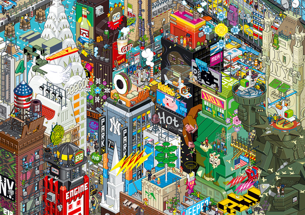

Sat, 27 Nov 2010 10:14:00 · poster · design · eBoy · NYC · New York · Pixelart
fantastic pixel art poster of new york by eboy

Fantastic pixel art poster of New York by eBoy.
Sat, 27 Nov 2010 10:14:00 · poster · design · eBoy · NYC · New York · Pixelart

Fantastic pixel art poster of New York by eBoy.